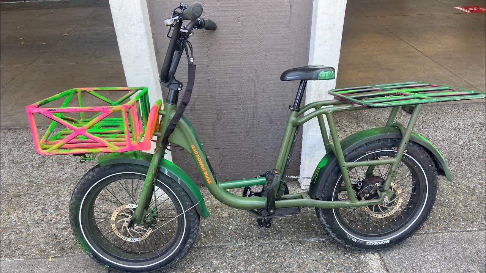
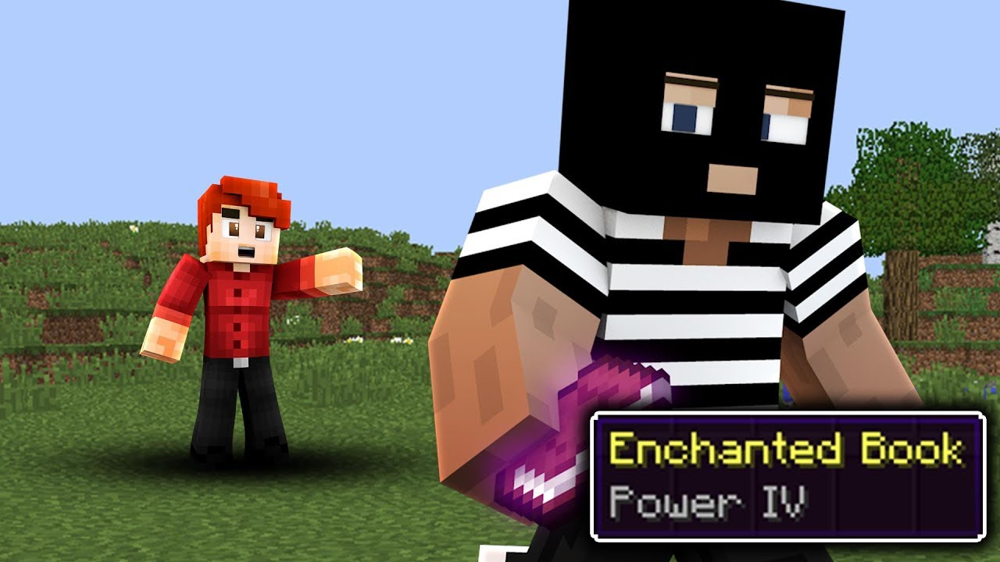

Photo gallery
2020.11.09 17:21








- How People Steal Your Power, Energy and Soul
My energy is constantly being used by those around me and I can feel it more or less sense them I'm my head, these were people closest to me friends, I've distanced my self from them all but they are intentional vampires they steal on purpose and are good at what they do, i almost feel as if they are using my energy for a darker agenda.. - Who Stole My Energy?: In this modern world it is easy to ...
Who Stole My Energy? by Ariana Trinity. In this modern world it is easy to feel completely drained of energy, and not know why. Our energy balance is a delicate thing and by understanding the energy flows that happen between people as a result of each interaction, we can better understand how to conserve our energy and protect ourselves against total loss of energy as expressed through modern ... - Buy Who Stole My Energy?: In this modern world it is easy ...
“Who Stole My Pension? How You Can Stop the Looting” provides a plan of action for pension stakeholders, including taxpayers, workers and retirees seeking to enhance pension protection. - | FaceBook stole my energy for bloggingHindsight ...
WHO STOLE MY ENERGY? Become Healthy, Happy, & Whole & Remove the Drama in Your Life. TUITION INCLUDES 2 FOLLOW UP GROUP COACHING SESSIONS + many other support tools! ENROLL NOW. MAY 10th & 11th • 9am – 5:30pm • SOUTH JORDAN, UT. Light. Wake Up & Live! Learn how lasting change comes from deep within. Discover the empowering connection ... - Who stole my energy? | JogBlog
Bah! Clearly my immune system has taken a battering, what with the food poisoning while away, then a cold has turned into a chest infec... - Who Stole My Energy – Live by Heart
Who stole my energy? February 22, 2007 jogblog 3 comments. I think someone broke in overnight earlier this week and stole my energy because it appears that I now have none. I haven’t been out for a run (or to the gym) all week and it’s looking unlikely that I’m going to make the race on Sunday unless I get some energy stores from somewhere. - Who stole my energy? | thesecretsober
Who Stole My Energy? How Difficult People Affect Your Aura. mbg Contributor By Rachelle Terry. mbg Contributor. Rachelle Terry is a medical intuitive with a unique ability to see the mind/body link and interpret information in the energy field and its link with human behavior, life patterns, health and relationships. ... - Who Stole My Energy? How Difficult People Affect Your Aura
The dawning of a new decade brings with it the prospect of new possibilities but, damn it, where's the energy gone to take advantage of it all? I had lots of it in my twenties, great flat in Primrose Hill, little red coupé, friends to have a good time with, career in TV, new horizons to explore. - They stole my energy!!! : bravefrontier
Who Stole My Energy?: In this modern world it is easy to feel completely drained of energy, and not know why. [Ariana Larimar] on Amazon.com. *FREE* shipping on qualifying offers. Here is an opportunity to find out not only where our energy goes, but also what it is that's creating a void inside of you. In the pages of Who Stole My Energy? you will find out what part our emotions play in all ... - It's A New Decade - So Who Stole My Energy?
From the start I had 60 energy in total, somehow I pressed both the dungeon and the chest box, and I never got into the dungeon. I don't know how... jump to content. my subreddits. ... limit my search to r/bravefrontier. use the following search parameters to narrow your results: subreddit:subreddit find submissions in "subreddit"